Premise:
Stryder Arena is a top-down 3D multiplayer arena battle game that I coded using C# and the XNA framework for windows and Xbox when I was 18. It supports up to 4-player splitscreen and has a number of different game modes, weapons, and abilities.View on Github
Gameplay Video:
Nerd stuff:
The coolest technical hurdle of this game was all of the rendering systems that I wrote into it. Since I was using XNA, I didn't have a built in lighting engine I could rely on. I created a system to allow lights with real-time cube-mapped sharp shadows. This allowed any object in the game world to cast a shadow from any light and to update the shadows as needed. I'm a big fan of the Doom 3 engine and I wanted sharp shadows like the doom and quake games had without using stencil maps. I also wanted to be able to have half a dozen shadow casting lights on screen at any given time so each light only does the minimum updating needed to keep it's shadows in sync with the casters.Read more about Omni directional Shadow Mapping.
How to play (slide show)
Weapon Types:
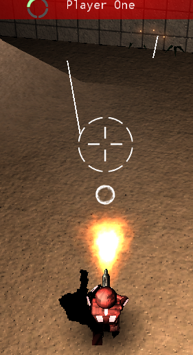
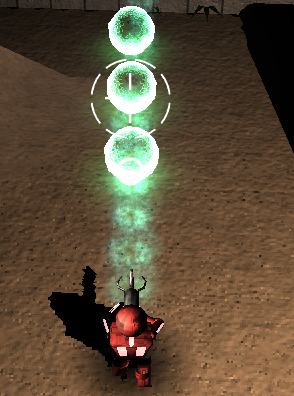
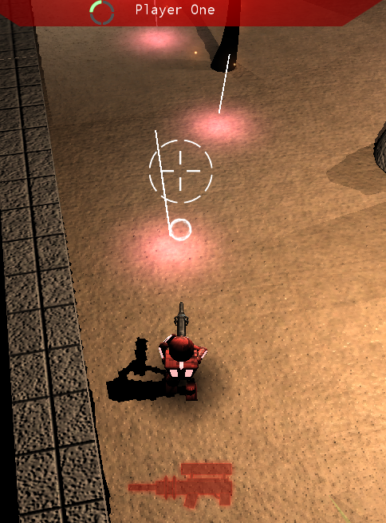
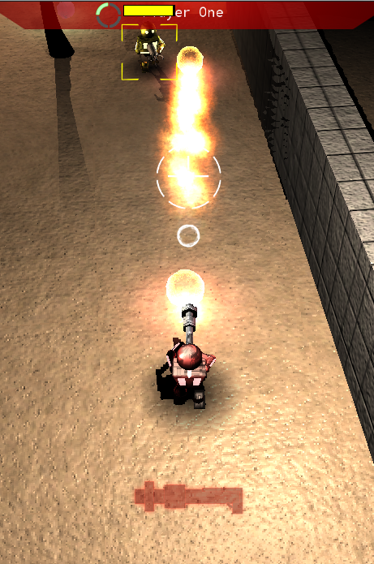
Ability Types:
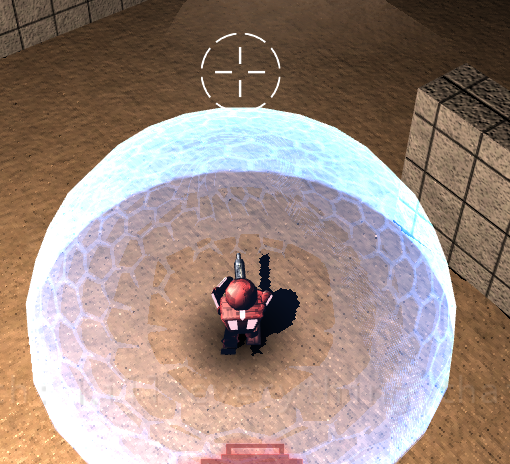
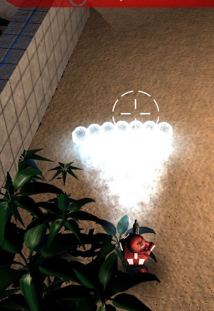
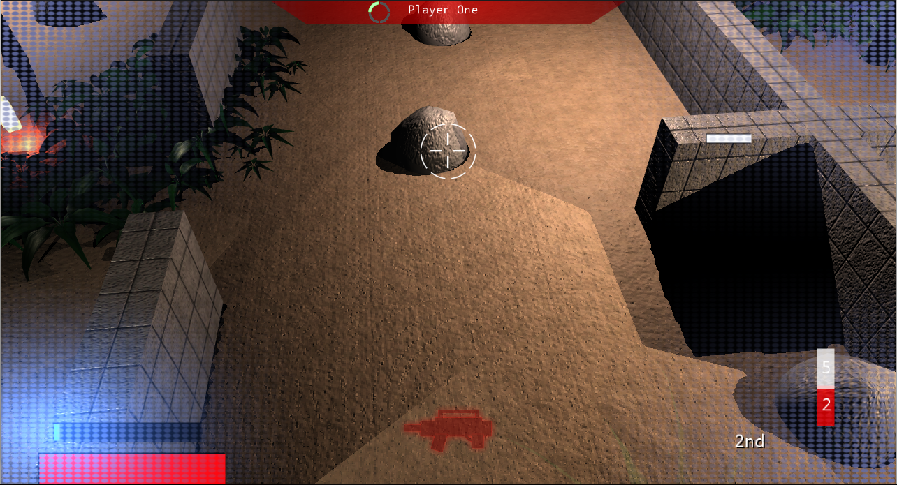
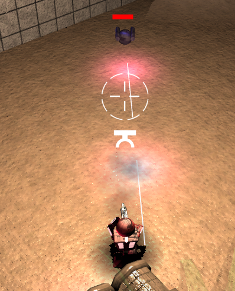
Game Modes:
- A standard deathmatch. Players get upgrades for weapons or abilities depending on how close the game is to ending. All upgrades are handed out equally and can be used when dead.
- Same as deathmatch but played on teams. Can be played with or without friendly fire.
- One player begins as the loner and all the other players attempt to assassinate him. Assassins get infinite cloak while the loner gets a rocket launcher and health regeneration. If an assassin kills the loner, he becomes the new loner.
- Same as deathmatch but instead of upgrading as the game goes on, players gain upgrades randomly by killing other players. If you kill a player with more upgrades than you, you gain all of that player's upgrades until your next kill. All upgrades resets on death.
- All players start with the highest upgrades. Players lose upgrades randomly by killing and gain upgrades randomly by being killed.
- Players fight over a flag which spawns in the center of the map. Players gain points by holding the flag and gain random upgrades by picking up the flag.
Map Types:
 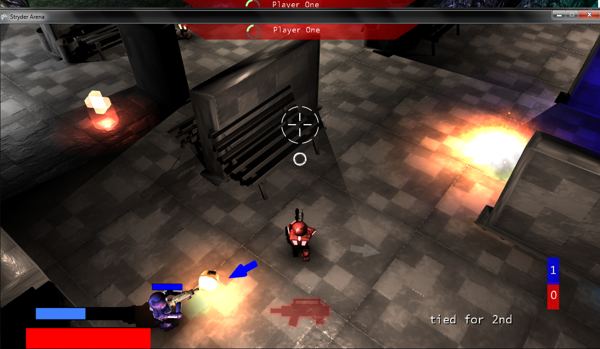
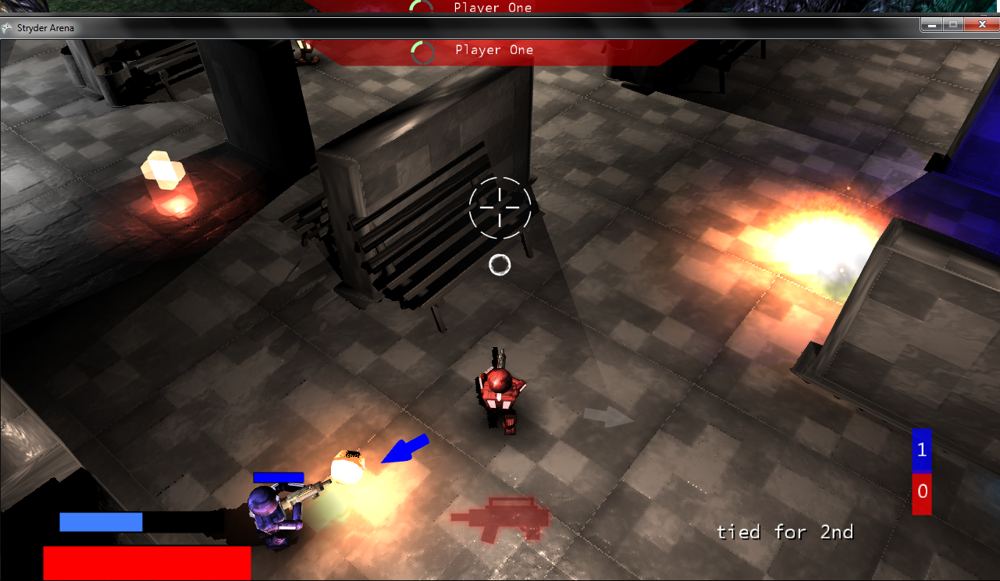
 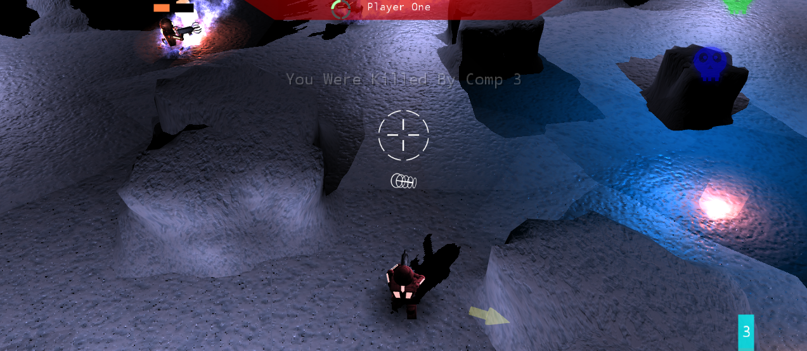
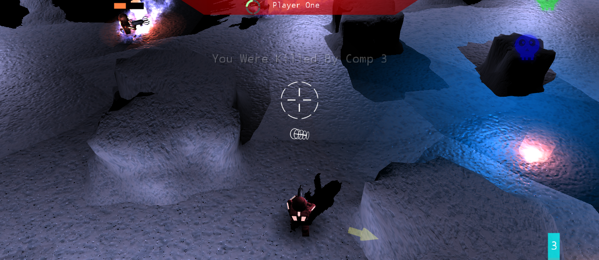